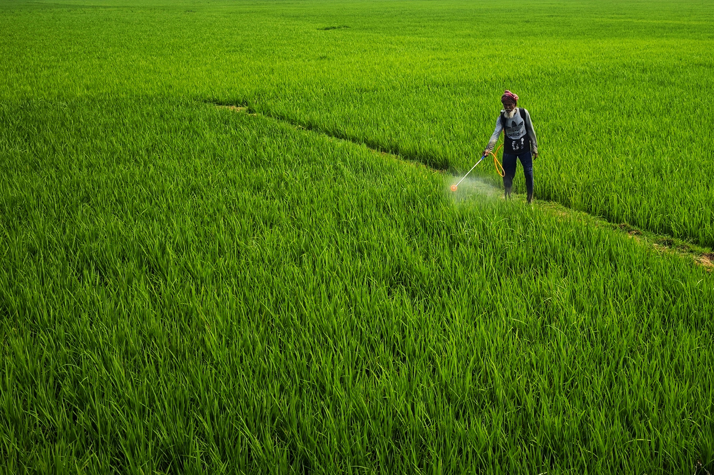

O agronegócio da América do Sul vive um momento de profunda transformação. A fusão entre tradição agrícola e tecnologia de ponta está criando um novo modelo de produção — mais eficiente, mais sustentável e cada vez mais conectado ao mercado global.
Como funciona a nova agricultura?
A agricultura de precisão chegou para mudar as regras do campo. Com drones que monitoram lavouras em tempo real, sensores de solo que medem umidade e nutrientes, e inteligência artificial que prevê colheitas, o produtor rural hoje toma decisões baseadas em dados.
Essa revolução tecnológica permite que menos insumos sejam utilizados para produzir mais. O resultado é uma redução significativa de custos e impacto ambiental, com aumento expressivo da produtividade por hectare.

uso de agrotoxicos aqui no bracil
O Elo com a Sustentabilidade
Produzir muito não é mais suficiente — é preciso produzir melhor. O agronegócio moderno incorporou práticas como o Plantio Direto, que protege o solo e reduz a erosão, a Rotação de Culturas, que mantém a fertilidade natural da terra, e o uso inteligente da água por meio de sistemas de irrigação eficientes.
Preservar matas ciliares, nascentes e corredores ecológicos deixou de ser apenas obrigação legal e se tornou parte central da estratégia produtiva. Produtores que adotam práticas sustentáveis têm acesso a mercados premium e financiamentos com juros menores.

uso intrustial de agrotoxicos
O Futuro da Nossa Terra
O futuro da produção agrícola sul-americana está na união entre o conhecimento tradicional e a inovação digital. Com o uso de drones, sensores e inteligência artificial, estamos entrando na era da Agricultura 5.0.
O impacto é claro: alimentos mais saudáveis, menos impacto ambiental e uma América do Sul cada vez mais forte e resiliente diante dos desafios globais do clima e da segurança alimentar.
"A tecnologia não substituiu o agricultor — ela o empoderou. Hoje, com um smartphone e dados precisos, um pequeno produtor pode tomar decisões que antes só grandes empresas conseguiam."
— Pesquisador da Embrapa, 2026América do Sul como Referência Mundial
Com vastas extensões de terra fértil, biodiversidade única e crescente adoção de tecnologia, a América do Sul se consolida como uma das principais referências mundiais em produção agrícola responsável. O desafio agora é garantir que esse crescimento chegue a todos — dos grandes produtores aos pequenos agricultores familiares que sustentam comunidades inteiras.